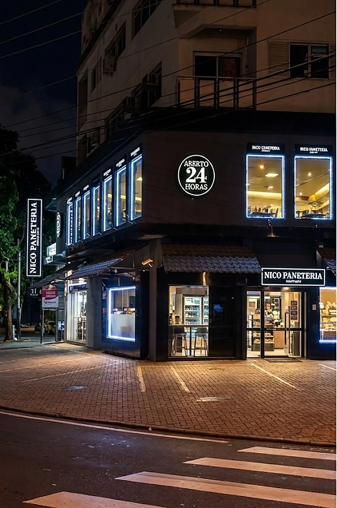
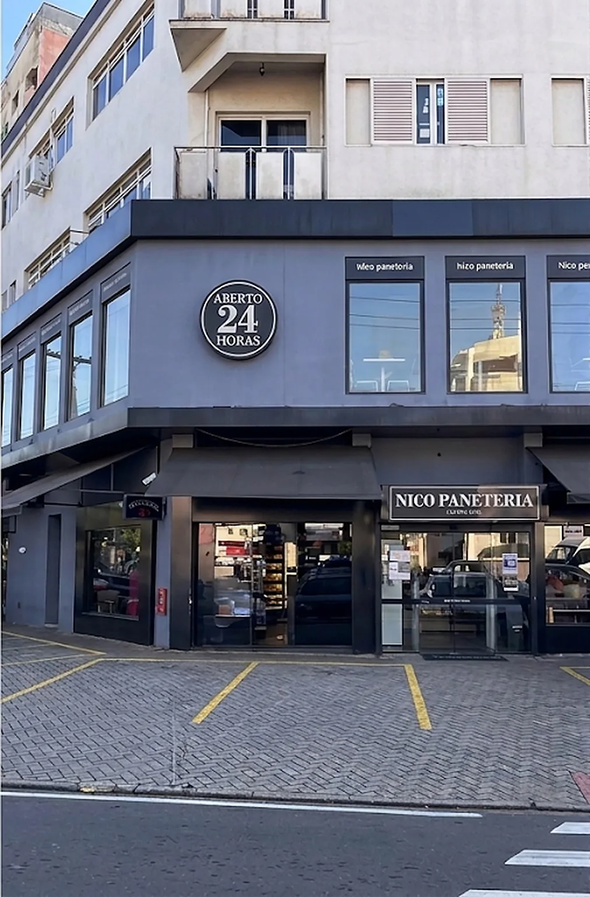
Padaria · Confeitaria · Pizzaria
Desde 1973, a padaria de Campinas que nunca fecha a porta.
Pão quente, salgado na vitrine e almoço no balcão. Aberta 24 horas, sete dias por semana, na Av. Andrade Neves.
no Google Maps
Uma casa, o dia inteiro
Café da manhã
Pão na chapa, pão de queijo e café coado, do primeiro ônibus ao último plantão.
Ver o cardápio →Almoço self-service
Buffet completo no meio do dia, para quem tem uma hora e quer comer bem.
Ver o cardápio →Pizzaria e caldos
Buffet de pizzas e sopas no andar de cima, para encontrar os amigos.
Ver o cardápio →Doces e salgados
Coxinha, folhados, sonhos e tortas feitos na própria Nico, o dia inteiro.
Ver o cardápio →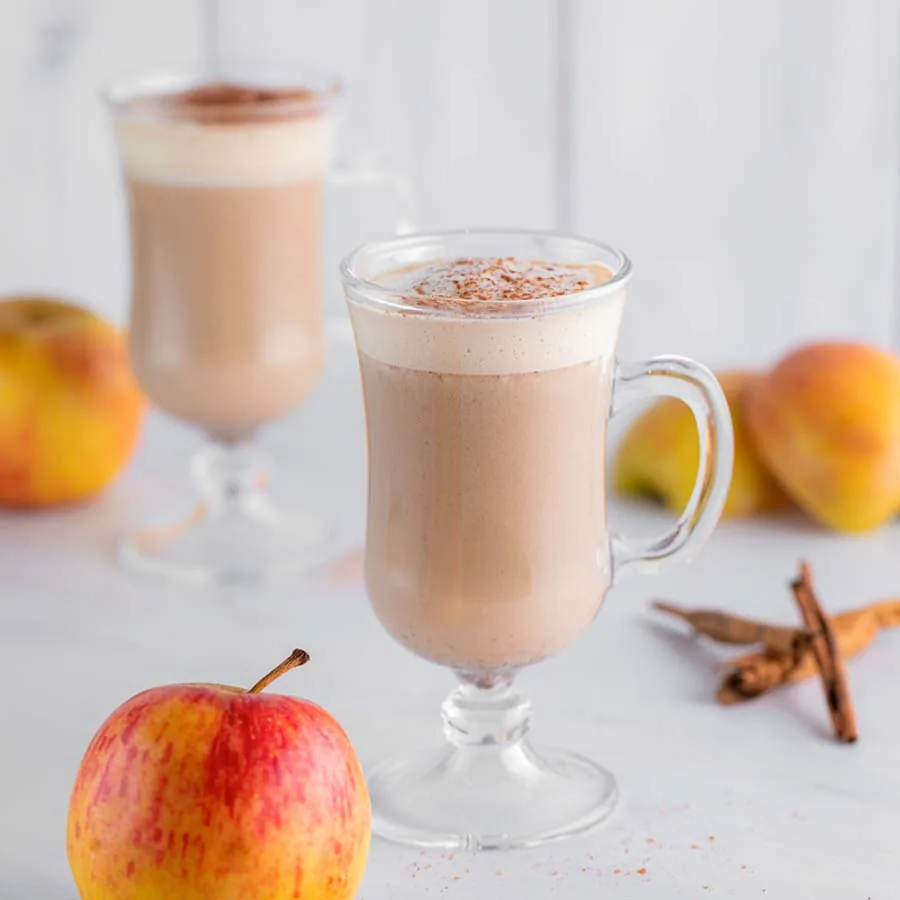
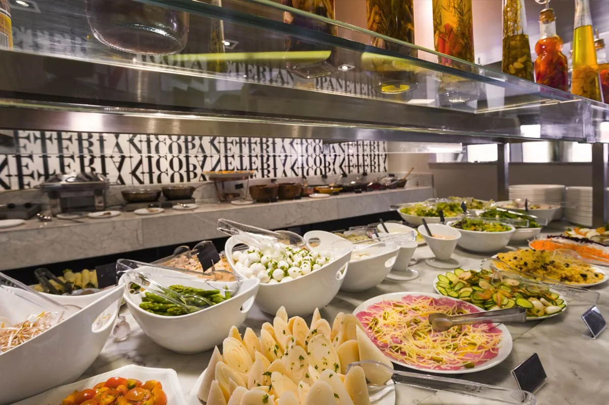

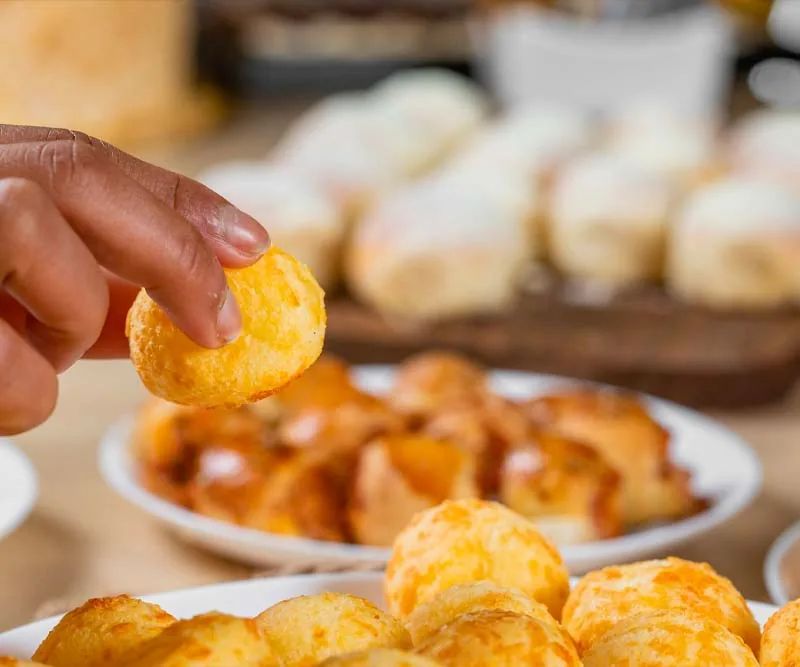
Delivery todos os dias, das 7h às 22h, só pelo iFood (pedidos até 21h30). Espaço Kids às sextas, sábados e domingos.
O que mais pedem
A coxinha chegou antes do pão.
Nas avaliações do Google, os salgados aparecem mais que qualquer outra coisa. Tudo feito na própria Nico.
Encomendas e eventos
Do café da empresa à festa de aniversário.
Bolos confeitados, cestas de café da manhã, lanches de metro, kit festa e coffee break. Pedido pelo WhatsApp.
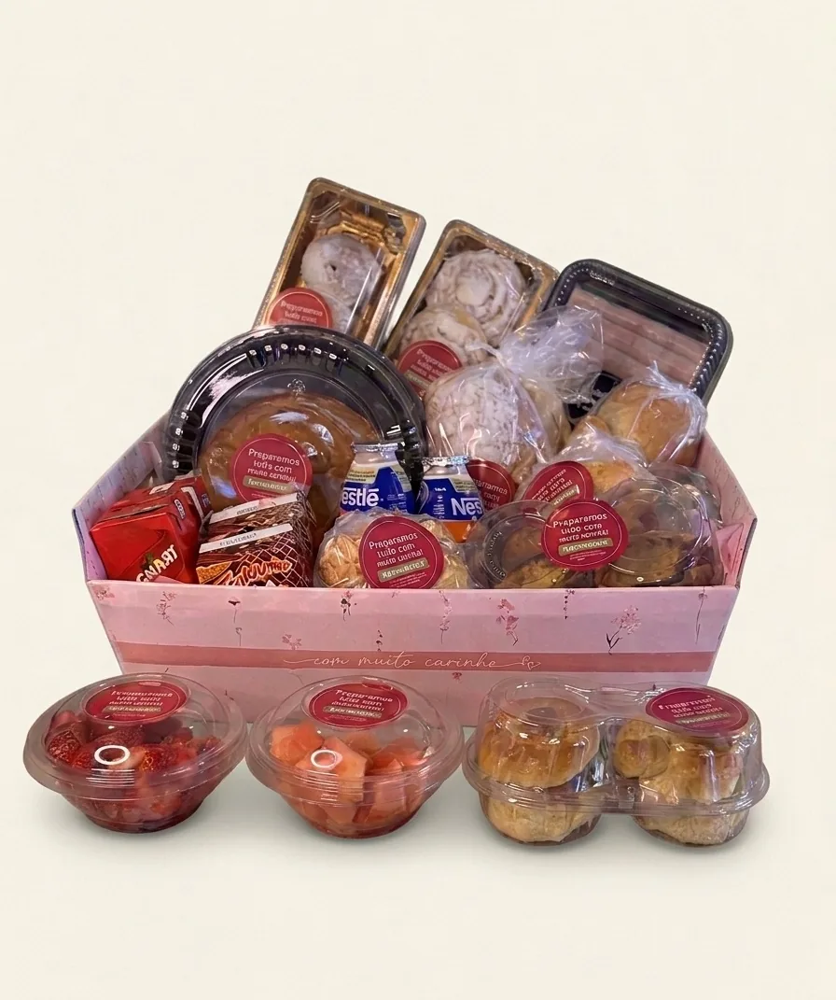
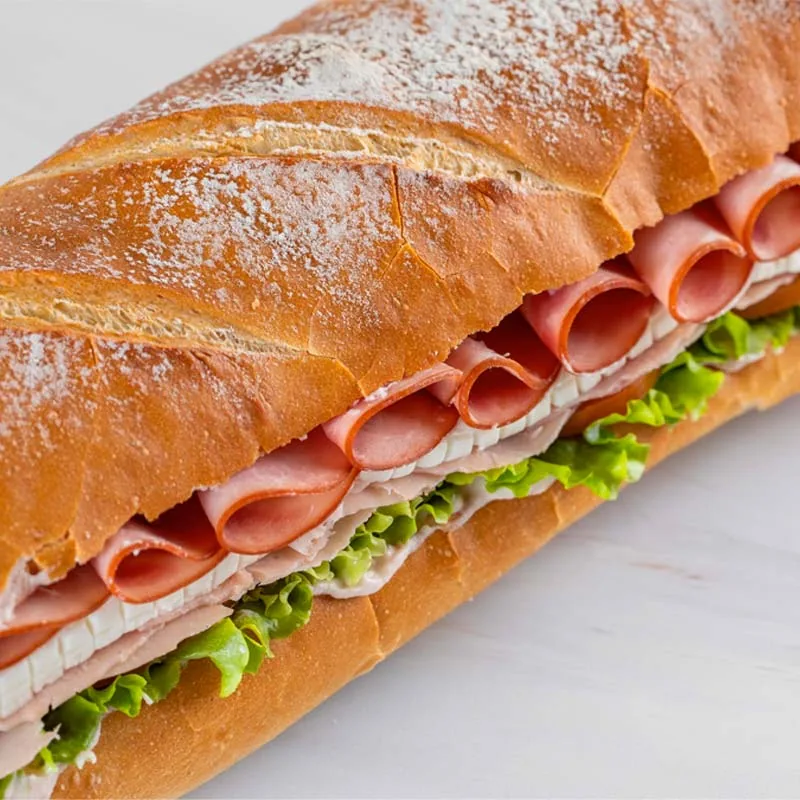
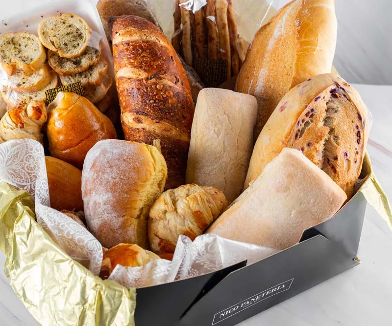
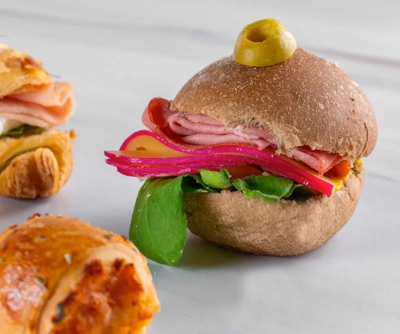
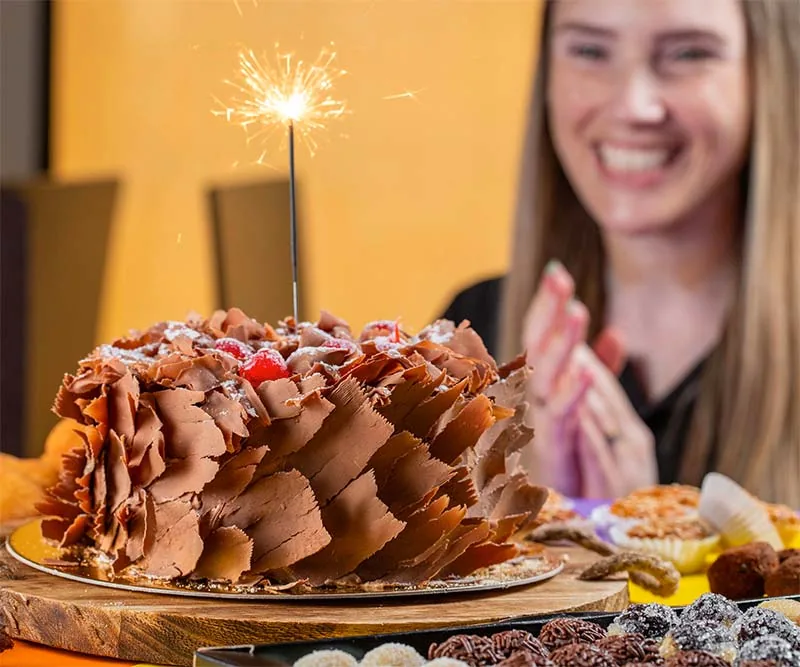
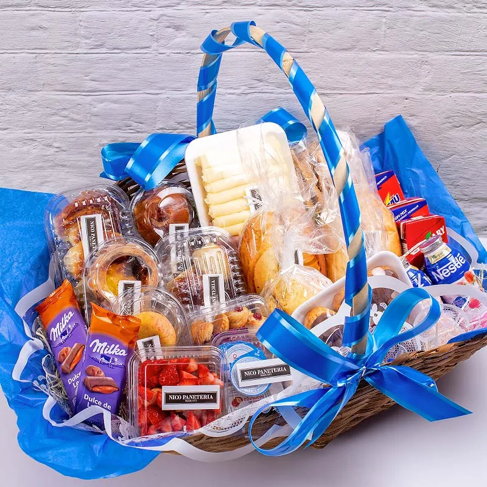

Visite
Av. Andrade Neves, 2286.
Campinas/SP. Mesas no térreo e no andar de cima, onde ficam o buffet de pizzas e caldos.
- Padaria e confeitaria24 horas, todos os dias
- Almoço self-serviceSeg–sex 11h30–15h
Sáb 12h30–15h - Pizzaria e sopasDom–qui 18h–23h
Sex e sáb 18h–00h - Delivery (iFood)Todos os dias, 7h–22h